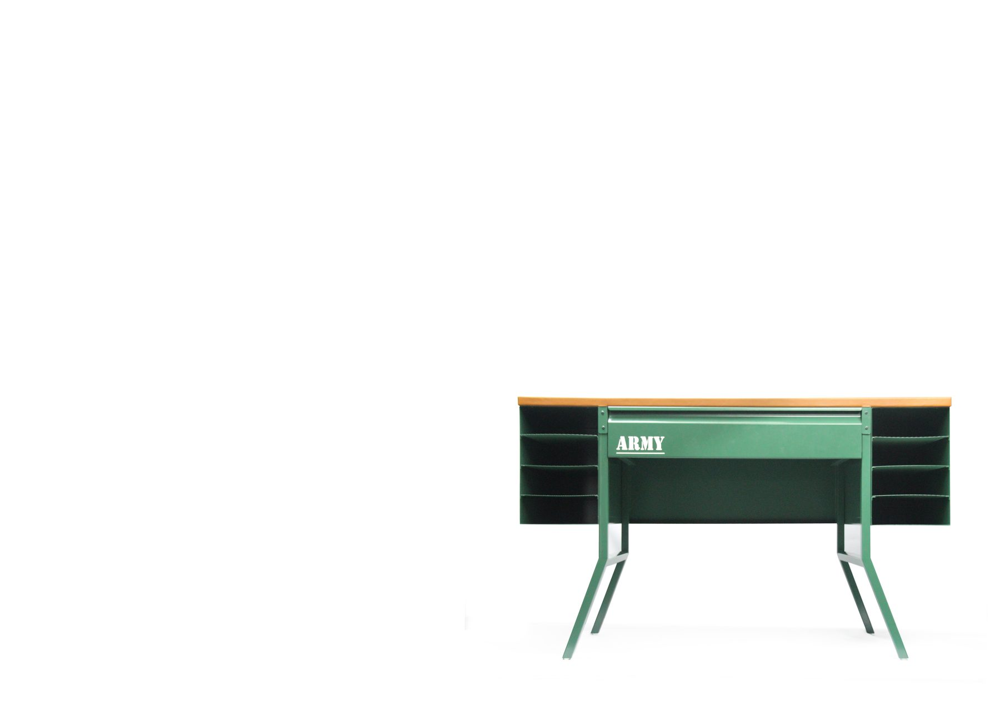
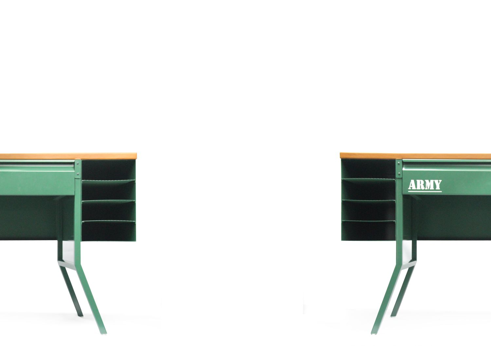
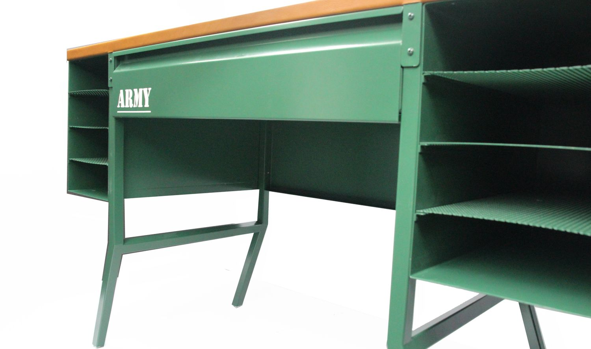
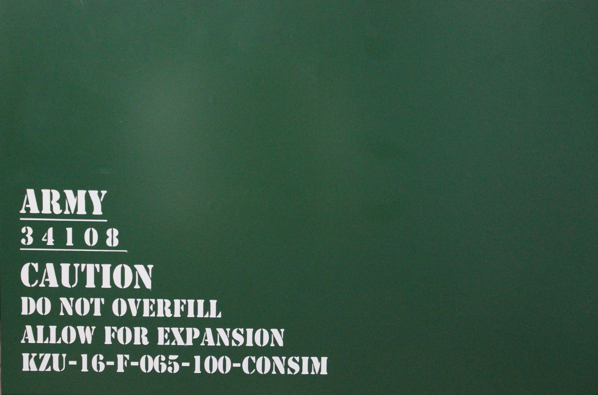
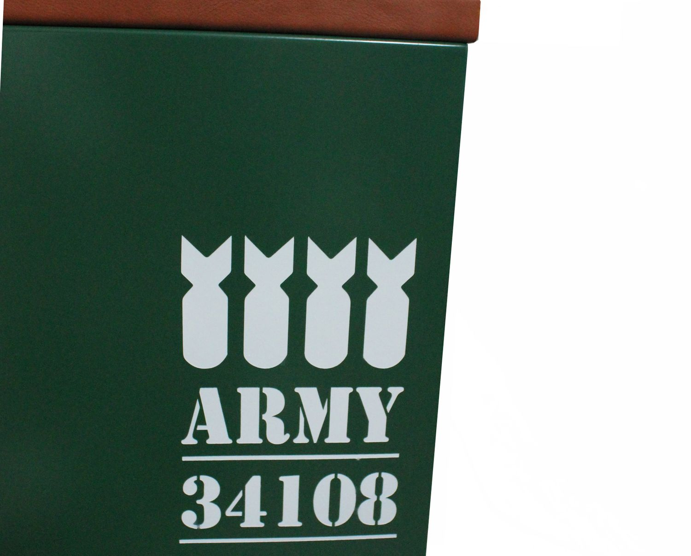

WORK 15 / 29
Consim
Reconsidering industrial materials through a desk.
Year2016
MaterialsSteel and leather
StageLimited edition

DESIGN STORY
Consim reconsiders industrial materials through the lens of war and peace. Steel, commonly associated with machinery and force, is redirected toward the construction of an everyday desk. The design proposes a shift in purpose: materials capable of destruction can instead support thinking, making and exchange.
SELECTED PRESENTATIONS
- 2016IFFS · Design Stars Showcase



